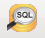

PostgreSQL¶
Note
| Fecha | Autores |
|---|---|
| 1 Septiembre 2012 |
|
| 24 Junio 2013 |
|
©2012 Fernando González Cortés y Miguel García Coya
Excepto donde quede reflejado de otra manera, la presente documentación se halla bajo licencia : Creative Commons (Creative Commons - Attribution - Share Alike: http://creativecommons.org/licenses/by-sa/3.0/deed.es)
Los contenidos de este punto son inicialmente traducciones de la documentación oficial de PostgreSQL que han sido extendidos posteriormente.
Note
PostgreSQL is Copyright © 1996-2006 by the PostgreSQL Global Development Group and is distributed under the terms of the license of the University of California below.
Postgres95 is Copyright © 1994-5 by the Regents of the University of California.
Permission to use, copy, modify, and distribute this software and its documentation for any purpose, without fee, and without a written agreement is hereby granted, provided that the above copyright notice and this paragraph and the following two paragraphs appear in all copies.
IN NO EVENT SHALL THE UNIVERSITY OF CALIFORNIA BE LIABLE TO ANY PARTY FOR DIRECT, INDIRECT, SPECIAL, INCI- DENTAL, OR CONSEQUENTIAL DAMAGES, INCLUDING LOST PROFITS, ARISING OUT OF THE USE OF THIS SOFTWARE AND ITS DOCUMENTATION, EVEN IF THE UNIVERSITY OF CALIFORNIA HAS BEEN ADVISED OF THE POSSIBILITY OF SUCH DAMAGE.
THE UNIVERSITY OF CALIFORNIA SPECIFICALLY DISCLAIMS ANY WARRANTIES, INCLUDING, BUT NOT LIMITED TO, THE IM- PLIED WARRANTIES OF MERCHANTABILITY AND FITNESS FOR A PARTICULAR PURPOSE. THE SOFTWARE PROVIDED HERE- UNDER IS ON AN “AS-IS” BASIS, AND THE UNIVERSITY OF CALIFORNIA HAS NO OBLIGATIONS TO PROVIDE MAINTENANCE, SUPPORT, UPDATES, ENHANCEMENTS, OR MODIFICATIONS.
Introducción¶
El objetivo de este tutorial sobre PostgreSQL es que el usuario sea capaz de crear y eliminar bases de datos y acceder a ellas para la manipulación de los datos.
Por esto, los puntos siguientes están pensados para dar una introducción simple a PostgreSQL, a los conceptos básicos sobre bases de datos relacionales y al lenguaje SQL. No se requiere experiencia en sistemas UNIX ni en programación.
Tras el tutorial, es posible continuar el aprendizaje leyendo la documentación oficial del proyecto, en inglés, en la que se puede encontrar abundante información sobre el lenguaje SQL, el desarrollo de aplicaciones para PostgreSQL y la configuración y administración de servidores.
Arquitectura cliente/servidor¶
Al igual que el resto de componentes instalados, PostgreSQL utiliza un modelo cliente/servidor, ya explicado en la introducción.
Las aplicaciones cliente pueden ser de naturaleza muy diversa: una herramienta orientada a texto (psql), una aplicación gráfica (pgAdmin3), un servidor web que accede a la base de datos para mostrar las páginas web, o una herramienta de mantenimiento de bases de datos especializadas. Algunas aplicaciones de cliente se suministran con la distribución PostgreSQL mientras que otras son desarrolladas por los usuarios.
Creación de una base de datos¶
El primer paso para trabajar con PostgreSQL es crear una base de datos. Para ello es necesario ejecutar como usuario postgres el comando createdb:
$ sudo su postgres
$ createdb mibd
Si no se tiene acceso físico al servidor o se prefiere acceder de forma remota es necesario utilizar un cliente SSH. La siguiente instrución:
$ ssh geo@190.109.197.226
conecta al servidor 190.109.197.226 con el usuario geo.
Ejercicio: Conectar al sistema desde Windows y crear una base de datos.
Generalmente el mejor modo de mantener la información en la base de datos es utilizando un usuario distinto a postgres, que sólo debería usarse para tareas administrativas. Es posible incluso crear más de un usuario con diferentes derechos (SELECT, INSERT, UPDATE, DELETE) para tener un entorno más seguro. Sin embargo, esto queda fuera del ámbito de este tutorial y se conectará siempre con el usuario postgres.
Acceso a una base de datos¶
Una vez la base de datos ha sido creada es posible utilizar un cliente para conectar a ella. Existen varias maneras:
- psql: el programa de terminal interactivo de PostgreSQL que permite introducir de forma interactiva, editar y ejecutar comandos SQL. Veremos más adelante qué es SQL. Es el que utilizaremos.
- una herramienta existente con interfaz gráfica, como pgAdmin, que veremos brevemente.
- una aplicación personalizada desarrollada con algún lenguaje para el que haya un driver de acceso. Esta posibilidad no se trata en esta formación.
Para conectar con pgAdmin se deberá seleccionar el menu File > Add Server y registrar el nuevo servidor con su dirección IP y el puerto en el que está escuchando (5432 por defecto). También habrá que indicar el nombre de usuario con el que se desea hacer la conexión.
Una vez se tiene configurada una entrada para la base de datos en pgAdmin, es posible conectar a dicho servidor haciendo doble click en dicha entrada.

Una vez creada, es posible selecionar la nueva base de datos y mostrar el árbol de objetos que contiene. Se puede ver el esquema “public” que no contiene ningún elemento.
Para seguir interactuando con la base de datos abriremos una ventana SQL clicando sobre el siguiente icono:
Que abrirá una ventana que permite enviar comandos SQL al servidor de base de datos. Probemos con los siguientes comandos:
SELECT version ();
SELECT current_date;
SELECT 2 + 2;
psql¶
También podemos conectar a la base de datos con psql. Podemos conectar con psql desde cualquier máquina que tenga una versión de psql compatible con el servidor. El propio servidor tiene dicho programa instalado y es obviamente compatible por lo que la mejor opción es acceder al servidor:
$ ssh geo@190.109.197.226
Una vez en el servidor hay que tomar la identidad del usuario postgres, que se utiliza para cualquier tarea administrativa de la base de datos:
$ sudo su postgres
Una vez seamos postgres hay que conectar a la base de datos. Para ello podemos usar la opción -d para entrar a psql ya conectados a la base de datos especificada:
$ psql -d mibd
o conectar sin especificar la base de datos y usar el comando \c dentro de psql:
$ psql
=# \c mibd
You are now connected to database "mibd" as user "postgres".
Note
Dado que psql es un programa en línea de comandos tenemos que diferenciar en la documentación las instrucciones que se deben de ejecutar en la línea de comandos del sistema operativo y la línea de comandos de psql. Las primeras, como se comentó en la introducción a Linux, vienen precedidas del símbolo del dólar ($) mientras que para las últimas utilizaremos un par de símbolos: =#. Es necesario prestar atención a este detalle durante el resto de la documentación.
Para obtener el listado de las bases de datos existentes en el sistema, usar el comando \l:
=# \l
Y para listar tablas del esquema por defecto de la base de datos actual (public):
=# \dt
Si queremos listar las tablas que hay en otro esquema es posible utilizar la siguiente sintaxis:
=# \dt gis.*
Por último, para obtener información sobre cualquier objeto de la base de datos es posible utilizar el comando \d:
=# \d gis.categorias
Se puede añadir un + para obtener información más detallada:
=# \d+ gis.categorias
Ayuda de psql¶
Para una completa referencia de los comandos disponibles es posible usar el comando \?:
=# \?
que nos abrirá la ayuda. El formato de la ayuda es el mismo que el del comando less.
SQL en psql¶
Hay que resaltar que además de los comandos, que comienzan por barra invertida (\) es posible introducir directamente sentencias SQL:
=# SELECT version ();
version
------------------------------------------------------------------------------------------------------------
PostgreSQL 9.1.5 on x86_64-unknown-linux-gnu, compiled by gcc (Ubuntu/Linaro 4.6.3-1ubuntu5) 4.6.3, 64-bit
(1 row)
=# SELECT current_date;
date
------------
2012-09-11
(1 row)
=# SELECT 2 + 2;
?column?
----------
4
(1 row)
=#
Los comandos SQL se pueden introducir en varias líneas y psql sólo los da por finalizados cuando el usuario introduce el carácter de finalización de la instrución: el punto y coma:
=# SELECT
-# current_date;
date
------------
2012-09-11
(1 row)
Así, si nos hemos olvidado teclear el punto y coma, no es necesario teclear de nuevo la instrucción. Basta con añadir dicho carácter:
=# select * from gis.categorias
-# ;
id | descripcion | abreviatura | orden
----+-----------------------------+--------------------+-------
1 | Alojamiento | to_sleep | 3
2 | Alimentación | where_to_eat | 2
3 | Esparcimiento | for_fun | 4
4 | Otros Servicios turísticos | organize_your_trip | 5
6 | Qué quieres hacer | what_do_you_do | 1
9 | Acontecimientos programados | what_happening | 6
(6 rows)
Ejecutando SQL desde la línea de comandos¶
Además de ejecutar el comando psql de forma interactiva es posible invocarlo pasándole como parámetro la instrucción SQL que se quiere utilizar. En dicho caso hay que especificar también el usuario con el que se ejecuta la acción y la base de datos a la que conectar:
$ psql -U postgres -d test_database -c "create schema test"
CREATE SCHEMA
$ _
Cargando información desde shapefile: shp2pgsql¶
Para cargar datos desde shapefile es posible utilizar el programa shp2pgsql de la siguiente manera:
$ shp2pgsql -c -D -g geom -s 4326 shapefile.shp test.tablename > tablename.sql
Lo cual nos generará un fichero tablename.sql que incorporará las instrucciones que al ser cargadas en un servidor PostgreSQL/PostGIS crearán una tabla con los mismos contenidos que el shapefile.
Incluso es posible cargar en PostgreSQL el fichero resultante con una única línea, sólo enlazando la salida de shp2pgsql con la entrada de psql:
$ shp2pgsql -c -D -g geom -s 4326 shapefile.shp test.tablename | psql -U postgres -d test_database
Por ejemplo los siguientes comandos cargan una serie de datos en PostGIS, en la base de datos geoserver:
$ psql -U postgres -d geoserver -c "create schema gis"
$ shp2pgsql -c -D -g geom -s 4326 -W LATIN1 Escritorio/datos/ARG_adm0.shp gis.admin0 | psql -U postgres -d geoserver
$ shp2pgsql -c -D -g geom -s 4326 -W LATIN1 Escritorio/datos/ARG_adm1.shp gis.admin1 | psql -U postgres -d geoserver
$ shp2pgsql -c -D -g geom -s 4326 -W LATIN1 Escritorio/datos/ARG_adm2.shp gis.admin2 | psql -U postgres -d geoserver
$ shp2pgsql -c -D -g geom -s 4326 -W LATIN1 Escritorio/datos/ARG_rails.shp gis.ferrovia | psql -U postgres -d geoserver
$ shp2pgsql -c -D -g geom -s 4326 -W LATIN1 Escritorio/datos/ARG_roads.shp gis.vias | psql -U postgres -d geoserver
$ shp2pgsql -c -D -g geom -s 4326 -W LATIN1 Escritorio/datos/ARG_water_areas_dcw.shp gis.zonas_agua | psql -U postgres -d geoserver
$ shp2pgsql -c -D -g geom -s 4326 -W LATIN1 Escritorio/datos/ARG_water_lines_dcw.shp gis.lineas_agua | psql -U postgres -d geoserver
Nótese que todos estos pasos se pueden simplificar en sólo dos, que cargarían todos los shapefiles de un directorio:
$ psql -U postgres -d geoserver -c "create schema gis"
$ for i in `ls Escritorio/datos/*.shp`; do shp2pgsql -c -D -g geom -s 4326 $i | psql -U postgres -d geoserver; done
El siguiente ejemplo crea una base de datos llamada analisis y dentro de ella un esquema llamado gis. Luego se instala la extensión PostGIS y por último se cargan en la base de datos todos los shapefiles existentes en el directorio Escritorio/datos/analisis:
$ psql -U postgres -c "create database analisis"
$ psql -U postgres -d analisis -c "create schema gis"
$ psql -U postgres -d analisis -c "create extension postgis"
$ for i in `ls Escritorio/datos/analisis/*.shp`; do shp2pgsql -c -D -g geom -s 25830 $i | psql -U postgres -d analisis; done